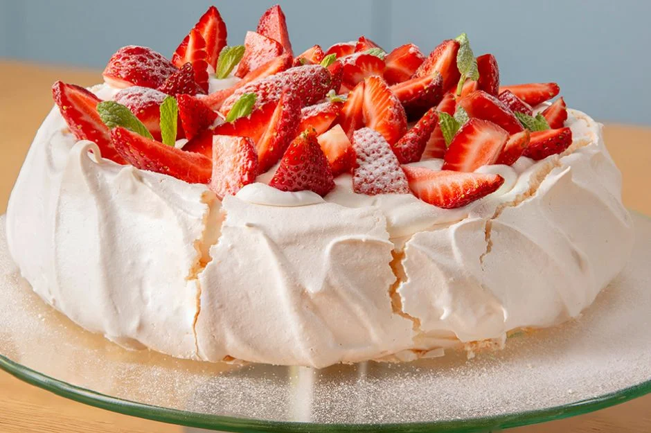

Dünya mutfağından bizlere armağan olan bu tatlı, yumurta aklarının bugüne kadar gördüğünüz en güzel
şekline sahip. Mereng severler, bu tatlıyı da oldukça çok sevecektir. Rus imparatorluk balerini Anna
Pavlova’nın adını ve adeta güzelliğini taşıyan bu tatlının şöhreti yaklaşık bir asırdır damakları
şenlendiriyor.
Tarif: Ezgi Ergül

Kaç Kişilik: 6 Kişilik
Hazırlama Süresi: 20 Dakika
Pişirme Süresi: 90 Dakika
Pavlova Tarifi İçin
Malzemeler
6 adet yumurta beyazı
2 su bardağı toz şeker
3 çay kaşığı nişasta
1 çay kaşığı sirke
Üzeri için:
1 su bardağı krema
300 gram çilek
İsteğe göre nane yaprağı
1 yemek kaşığı pudra şekeri
Pavlova Nasıl Yapılır ?
Yumurta beyazlarını önce düşük devirde başlayarak köpürtün.
Köpüren yumurtalara azar azar şekeri
ekleyin, şeker tamamen eriyip parlak ve sıkı bir hal alana kadar çırpma işlemine devam edin.
Yağlı kağıt serilmiş tepsiye karışımı alın ve spatula yardımı ile kalın ve yuvarlak bir şekil verin.
Karışımın ortasını hafifçe çukur ve kenarlarını da kaşık yardımı ile etek gibi şekillendirin.
Fırını 150 derecede ısıtın. Pavlovayı fırına atmadan önce ısıyı 120 dereceye düşürün. İlk 60
dakika
geçtikten sonra fırını 100 dereceye düşürün ve 30 dakika daha pişirin.
Geçen 90 dakikanın ardından fırını kapatın ve kapağını hafifçe açık bırakarak fırının içinde bir
saat bekletin. Pavlovayı fırından çıkardıktan sonra oda sıcaklığında da en az bir saat
beklettikten
sonra artık servis edebilirsiniz.
Servis için kremayı köpürtün ve pavlovanın çukur kısmına doldurun. Çilekleri büyük parçalar
halinde
kremanın üstüne koyun, aralara nane yaprakları ve son olarak pudra şekeri serperek servis
edebilirsiniz.